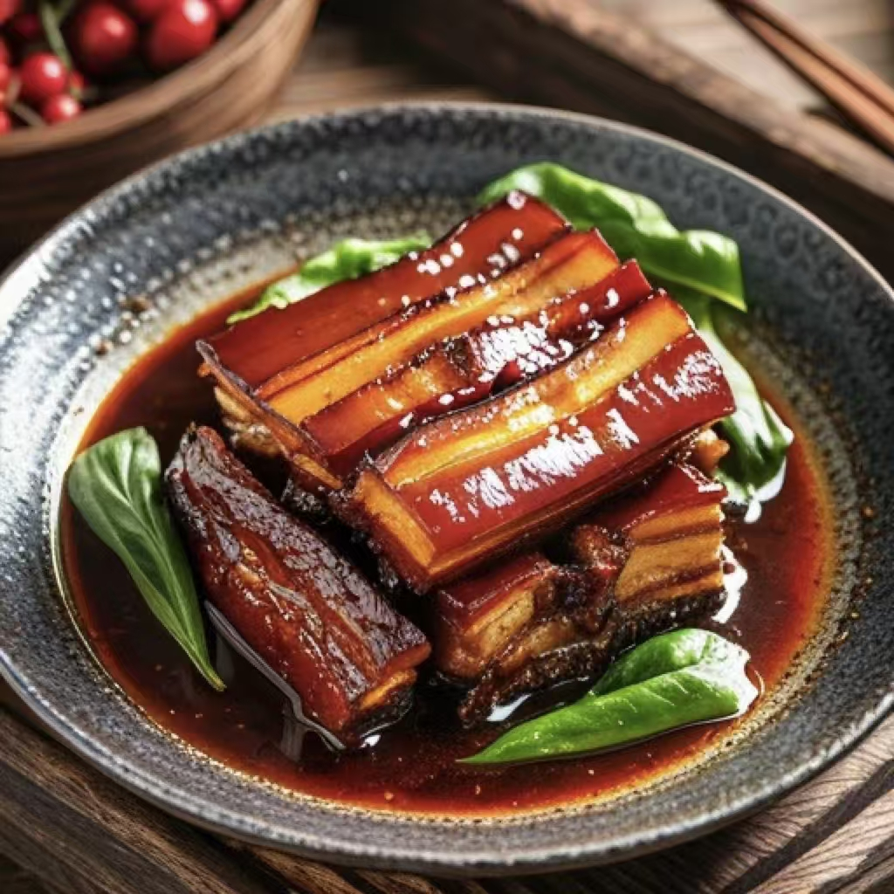
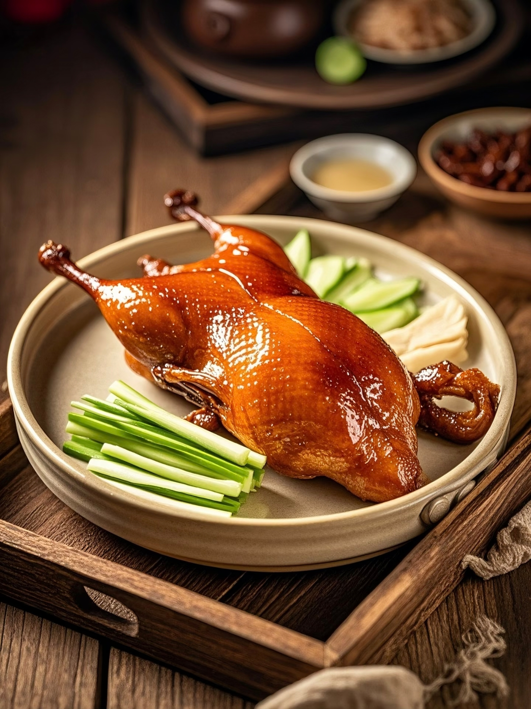
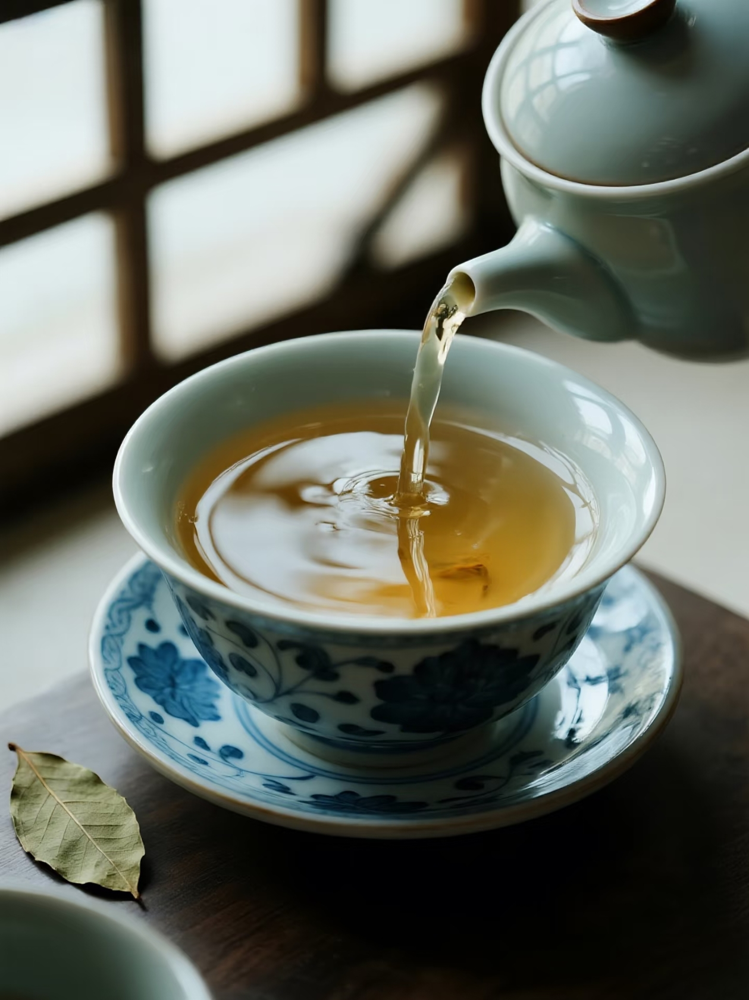
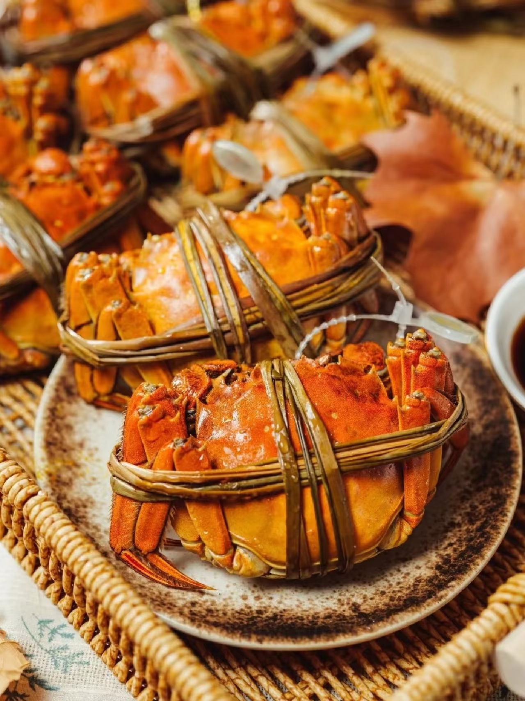
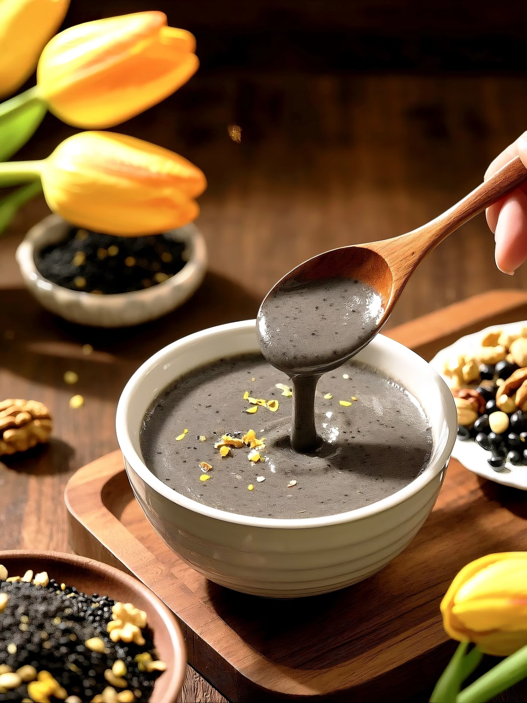
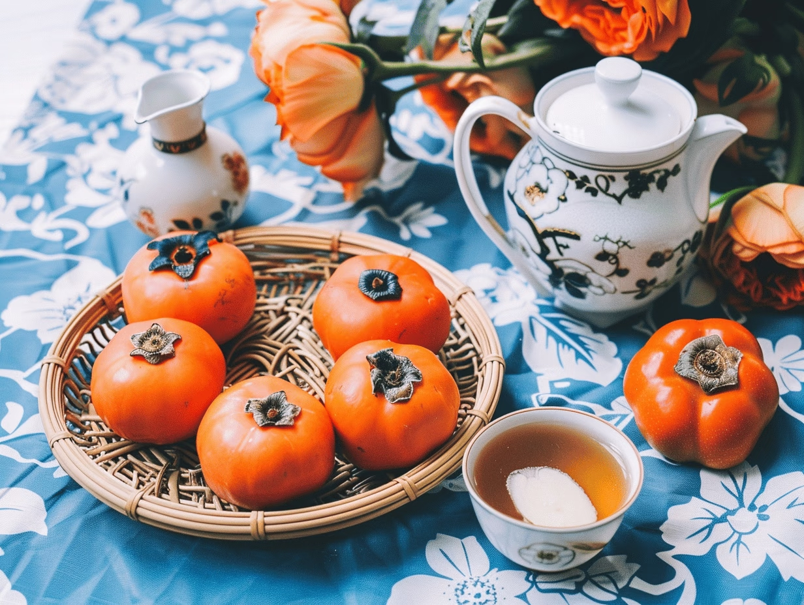

硕果累累，品味秋日的丰收与醇厚

立秋有“贴秋膘”习俗。经过夏季的炎热，人们食欲下降，体重可能减轻。立秋这天吃炖肉、烤肉等油腻食物，补充营养，弥补夏季的损耗，为过冬储备能量。

处暑时节，民间有吃鸭子的传统。鸭肉性凉，有滋阴养胃、利水消肿的功效，适合在暑气未消的初秋食用。做法多样，如北京烤鸭、南京盐水鸭、冬瓜薏米老鸭汤等。

白露前后，茶树经过夏季的酷热，此时采摘的茶叶香气最浓，称为“白露茶”。民间认为喝白露茶能生津止渴、清心降火，是秋季养生的佳品。

秋分时节，螃蟹膏肥黄满，正是食用的最佳时期。民间有“秋分食蟹，胜吃百味”的说法。螃蟹营养价值高，但性寒，食用时通常搭配姜醋，以驱寒去腥。

寒露有吃芝麻的习俗。芝麻性温，味甘，具有补肝肾、润五脏、益气力的功效，适合在气候干燥的秋季食用。常见的吃法有芝麻糊、芝麻糖、炒芝麻等。

霜降时节，柿子成熟。民间认为霜降吃柿子，冬天就不会感冒、流鼻涕。柿子营养价值高，富含维生素C、膳食纤维等，但不宜空腹食用，且糖尿病患者应慎食。